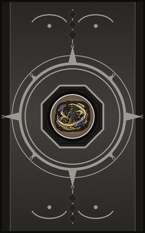
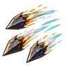
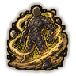
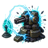
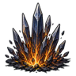
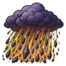
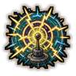
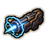

Technique trees › Clans and bloodlines
Masamune clan (Iron Sand)
12 techniques in the Clan tab.
Needs the Masamune (Iron Sand) gene.

Ferro-Force Shot C
Chakra 15. Fling magnetised shards of iron sand at a target, three at a time.
Ferro-Force Shot C
Chakra 15. Fling magnetised shards of iron sand at a target, three at a time.
Fling magnetised shards of iron sand at a target, three at a time.
| Rank | Chakra | Cooldown | Class level |
|---|---|---|---|
| C | 15 | 10 s | 2 |
Polarity Field CBAS
Chakra 30 to 60. An electromagnetic field around the user that pulls enemy shots off course. Bigger and longer at each rank.
Polarity Field CBAS
Chakra 30 to 60. An electromagnetic field around the user that pulls enemy shots off course. Bigger and longer at each rank.
An electromagnetic field around the user that pulls enemy shots off course. Bigger and longer at each rank.
| Rank | Chakra | Cooldown | Class level |
|---|---|---|---|
| C | 30 | 1.2 hours | 3 |
| B | 40 | 1.2 hours | 8 |
| A | 50 | 1.2 hours | 13 |
| S | 60 | 1.2 hours | 18 |

Embodied Bulwark CB
Chakra 30 to 40. Coat the user in a layer of iron sand for half an hour: strong against blades and bullets, a little slower.
Embodied Bulwark CB
Chakra 30 to 40. Coat the user in a layer of iron sand for half an hour: strong against blades and bullets, a little slower.
Coat the user in a layer of iron sand for half an hour: strong against blades and bullets, a little slower.
| Rank | Chakra | Cooldown | Class level |
|---|---|---|---|
| C | 30 | 1.2 hours | 3 |
| B | 40 | 1.2 hours | 9 |

Device Denial C
Chakra 25. An electromagnetic pulse that shuts down one turret or mechanoid. Hits a machine already disrupted twice as hard.
Device Denial C
Chakra 25. An electromagnetic pulse that shuts down one turret or mechanoid. Hits a machine already disrupted twice as hard.
An electromagnetic pulse that shuts down one turret or mechanoid. Hits a machine already disrupted twice as hard.
| Rank | Chakra | Cooldown | Class level |
|---|---|---|---|
| C | 25 | 30 s | 4 |
Polarity Power: Attract B
Chakra 30. Rip the weapon out of an enemy's hands with magnetism and fling it towards the user.
Polarity Power: Attract B
Chakra 30. Rip the weapon out of an enemy's hands with magnetism and fling it towards the user.
Rip the weapon out of an enemy's hands with magnetism and fling it towards the user.
| Rank | Chakra | Cooldown | Class level |
|---|---|---|---|
| B | 30 | 1 hour | 8 |
Armament Orbit B
Chakra 35. Send blades of iron sand into orbit around the user for a minute: enemies within two cells are cut again and again.
Armament Orbit B
Chakra 35. Send blades of iron sand into orbit around the user for a minute: enemies within two cells are cut again and again.
Send blades of iron sand into orbit around the user for a minute: enemies within two cells are cut again and again.
| Rank | Chakra | Cooldown | Class level |
|---|---|---|---|
| B | 35 | 2 hours | 9 |

Slaying Spire B
Chakra 35. Sharp iron pillars burst up under a small area.
Slaying Spire B
Chakra 35. Sharp iron pillars burst up under a small area.
Sharp iron pillars burst up under a small area.
| Rank | Chakra | Cooldown | Class level |
|---|---|---|---|
| B | 35 | 30 s | 10 |
Monolith: Grinding Prism B
Chakra 45. A spinning prism of iron sand grinds a spot for six seconds.
Monolith: Grinding Prism B
Chakra 45. A spinning prism of iron sand grinds a spot for six seconds.
A spinning prism of iron sand grinds a spot for six seconds.
| Rank | Chakra | Cooldown | Class level |
|---|---|---|---|
| B | 45 | 1.2 hours | 11 |

Monolith: Black Drizzle A
Chakra 70. Iron sand rains over a wide area for five seconds.
Monolith: Black Drizzle A
Chakra 70. Iron sand rains over a wide area for five seconds.
Iron sand rains over a wide area for five seconds.
| Rank | Chakra | Cooldown | Class level |
|---|---|---|---|
| A | 70 | 2.4 hours | 14 |

Device Dead Zone A
Chakra 60. A wide electromagnetic pulse: every enemy mechanoid in the area takes heavy EMP damage.
Device Dead Zone A
Chakra 60. A wide electromagnetic pulse: every enemy mechanoid in the area takes heavy EMP damage.
A wide electromagnetic pulse: every enemy mechanoid in the area takes heavy EMP damage.
| Rank | Chakra | Cooldown | Class level |
|---|---|---|---|
| A | 60 | 2.4 hours | 13 |

Rail Gun S
Chakra 90. S-rank. Accelerate a single piece of iron to impossible speed: one shot that punches through almost any armour.
Rail Gun S
Chakra 90. S-rank. Accelerate a single piece of iron to impossible speed: one shot that punches through almost any armour.
S-rank. Accelerate a single piece of iron to impossible speed: one shot that punches through almost any armour.
| Rank | Chakra | Cooldown | Class level |
|---|---|---|---|
| S | 90 | 6 hours | 19 |
Monolith: Satetsu World Method S
Chakra 120. S-rank. Branching spikes of iron sand tear through a huge area.
Monolith: Satetsu World Method S
Chakra 120. S-rank. Branching spikes of iron sand tear through a huge area.
S-rank. Branching spikes of iron sand tear through a huge area.
| Rank | Chakra | Cooldown | Class level |
|---|---|---|---|
| S | 120 | 12 hours | 20 |
Chakra is the technique's base cost, the number in its def. In play it is multiplied by the pawn's chakra energy usage multiplier, which traits (chakra artificer 90%, volatile conduit 110%), World of Naruto genes and jutsu enhancements change, so the technique window can show a slightly different number for each ninja. Cooldowns are in-game time, as the technique window shows them, and the pawn's cooldown stat shortens or lengthens them. World of Naruto gives every ninja a base of 100 maximum chakra; genes and traits change it.